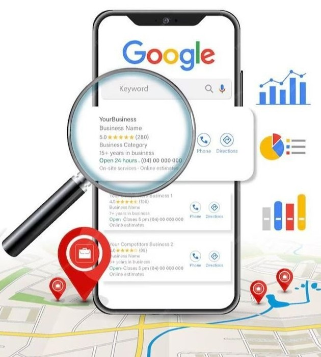

When a Google Business Profile gets suspended or disabled, it stops appearing in search and maps results. We provide Google Business Profile Reinstatement services where the issue is reviewed and the profile is prepared for restoration. This includes checking policy-related problems, correcting listing information, and submitting the required appeal steps. The process focuses on fixing issues that may be causing the suspension so the listing can return to normal visibility on Google.
Google Business Profile Reinstatement is a focused process used to restore business listings that have been suspended, disabled, or removed from Google Search and Google Maps. This service involves carefully reviewing the listing, identifying possible policy or information issues, correcting the required details, and then submitting a structured reinstatement request. The main goal is to bring the business profile back online so it can appear properly in search results and remain accessible to users looking for related services.
We carefully analyze the business profile in detail to understand the exact reason behind suspension or removal. This includes checking listing activity, profile data, and possible guideline issues so the root cause can be properly identified before any further action is taken.
All necessary updates are made according to platform guidelines to fix incorrect or incomplete information in the business profile. This helps ensure the listing meets required standards and reduces the chances of repeated issues during the reinstatement process.
A properly structured reinstatement request is prepared and submitted with all required details. This step is handled carefully to make sure the request clearly explains the situation and supports the chances of bringing the business profile back online.
Business details such as name, category, contact information, and service description are reviewed and corrected where needed. This ensures the listing remains consistent, accurate, and aligned with platform requirements for better approval chances.
The entire reinstatement process is handled in a clear and structured sequence, starting from issue identification to final submission. Each step is carefully managed to reduce errors and improve the overall recovery outcome for the business profile.
The process is managed in an organized and straightforward way so businesses can easily understand what is being done at each stage. This helps reduce confusion and makes the reinstatement process smoother from start to finish.
A Google Business Profile can sometimes get suspended or restricted, which prevents it from appearing in search and map results. This can happen due to policy issues, incorrect information, or listing conflicts.
Reinstatement focuses on identifying the reason for suspension and fixing the issues step by step. Once corrections are made, a proper request is submitted to help restore the listing so it can appear again in relevant search results.
Online searches often include Google Business Profile Reinstatement with queries like "reinstate Google Business Profile", "restore suspended business listing", and "recover Google Business Profile access". Many business owners look for ways to bring their profile back online after suspension or verification issues.
Search patterns show that users prefer clear and structured steps when dealing with reinstatement requests, including submitting accurate business details and supporting information. Providing complete and consistent data helps ensure smoother review processes and restores visibility on Google Search and Google Maps.
When a business listing is suspended or removed, Google Business profile reinstatement helps restore its visibility by addressing the issues that caused the restriction. This process involves reviewing policy-related problems, correcting inaccurate information, and submitting the necessary updates so the profile can be reconsidered and appear again in search and map results.
Google Business profile reinstatement focuses on restoring a business listing that has been suspended or restricted so it can appear again in search and map results. This process involves identifying issues in the profile, correcting inaccurate details, and ensuring the listing follows required guidelines for proper visibility.
If guideline issues are not corrected before requesting reinstatement, the listing may continue to remain restricted. Fixing all violations is essential for recovery.
Outdated or inaccurate information can delay reinstatement approval. Ensuring all details are correct improves the chances of restoration.
Sending multiple requests without addressing the root issue can slow down the process. A properly corrected profile increases the likelihood of approval.
We examine your suspended Google Business Profile, identify possible policy issues, and review all available information to determine the reason behind the suspension.
We correct inaccurate business information, update profile details, organize supporting documents, and prepare your profile to meet Google's guidelines.
We prepare and submit a Google Business Profile reinstatement request with the required information and supporting evidence to help restore your listing.
We monitor the reinstatement process, respond to additional requests if needed, and review your Google Business Profile after restoration to help prevent future issues.
The business profile was suspended due to policy concerns, which removed it from Google Search and Google Maps and caused a sudden drop in customer inquiries.
After reviewing policy issues, correcting business information, and submitting a structured reinstatement request with supporting details, the Google Business Profile was successfully restored and regained visibility.
Restore suspended or restricted listings with proper Google Business Profile reinstatement support. Fix policy issues, correct business details, and submit a structured request to regain visibility on Google Search and Google Maps.
Find answers to the most common questions about Google Business Profile Reinstatement and how suspended listings can be recovered.
It is the process of restoring a suspended or disabled Google Business Profile after fixing policy or verification issues.
Suspensions can happen due to policy violations, incorrect business information, suspicious activity, or guideline non-compliance.
Yes, many suspended profiles can be recovered if the issues are properly identified and corrected.
It usually takes a few days to a few weeks depending on the complexity of the case and Google’s review process.
You may need business documents, proof of address, corrected profile details, and compliance with Google guidelines.
Yes, reinstatement usually requires submitting a formal appeal through Google Business Profile support.
Google reviews your case and either restores the profile or requests additional information.
Yes, repeated violations of Google guidelines can lead to multiple suspensions or permanent restrictions.
Common mistakes include submitting incomplete documents, ignoring policy violations, and providing incorrect information.
Yes, all policy issues and incorrect details should be fixed before submitting a request.
Yes, even new profiles can be suspended if they violate Google’s guidelines during setup or verification.
Only necessary corrections should be made, as unnecessary edits can delay the review process.
Yes, reinstatement requests are submitted through official Google Business Profile support channels.
You can review the rejection reason, fix remaining issues, and submit another appeal if eligible.
In some cases, Google may require re-verification after reinstatement.
Yes, both physical and service-area businesses can be reinstated if they comply with policies.
No, reinstatement restores visibility, but rankings depend on ongoing optimization.
Only well-prepared appeals help; repeated low-quality submissions can delay recovery.
It can be complex depending on the reason for suspension and policy violations involved.
It is important because it restores your business visibility on Google Search and Maps, helping you regain customers and leads.
Whether you have a specific question about our services or you're ready to start your journey to the top of local rankings, we're here to help. Fill out the form and a dedicated GMB Expert will provide a detailed response within 24 hours.
High competition countries with strong local search demand worldwide.
Growing markets with strong Local SEO opportunities.
Real feedback from business owners who successfully recovered suspended listings, restored visibility, and regained customer access with our Google Business Profile Reinstatement services.
Our business profile was suspended unexpectedly, and we lost visibility overnight. Their reinstatement service restored everything quickly and correctly.
They handled our reinstatement process professionally and fixed all policy issues that were blocking our business listing.
Excellent support in getting our suspended profile reinstated. They understood the issue and resolved it faster than expected.
Their knowledge of Google policies is impressive. They successfully reinstated our profile after multiple failed attempts on our own.
We were stuck with a suspended listing for weeks. Their reinstatement process fixed everything and brought our business back online.
Very professional and efficient reinstatement service. They prepared everything properly and got our listing back live.
They guided us step by step through the reinstatement process. Our business profile was restored without any further issues.
Our appeal and reinstatement were handled perfectly. We got our Google Business Profile back and started receiving leads again.
They identified the reason for suspension and fixed it properly. Our listing was reinstated without delays.
Highly reliable reinstatement service. They restored our business profile and helped us regain online visibility quickly.

Get your suspended or disabled Google Business Profile back online with our professional reinstatement service. We carefully review the issue, identify policy concerns, and prepare a strong recovery strategy to help restore your listing. Our process focuses on compliance, accurate documentation, and structured appeal preparation to improve the chances of successful reinstatement and get your business visible again on Google Search and Maps.
Chat on WhatsApp